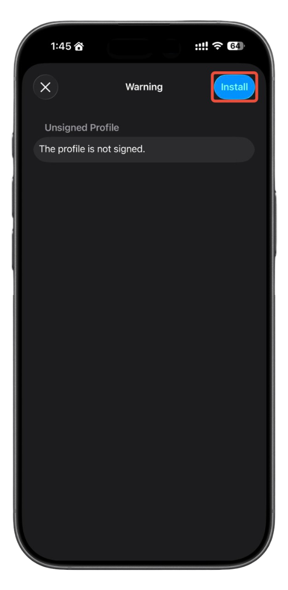

Install this app to get quick access to tools such as CPR Timer, WAAFELLS, Pediatrics Calculations, RSI Checklist, GCS/APGAR/SAT Scores, MAP Calculator, and more. It also supports running actions via the Shortcuts app.
If the download doesn’t start, make sure you’re using Safari on iPhone/iPad.
1. Tap “Download Configuration Profile”
No screenshot for this step.
2. Allow the download
When you see “ios.niwashibase.com is trying to download a configuration profile”, tap Allow.

3. Profile Downloaded
Safari will show “Profile Downloaded”. Tap Close.
4. Open Settings
Open the Settings app.

5. Go to General
In Settings, tap General.
6. VPN & Device Management
Scroll down and tap VPN & Device Management.
7. Downloaded Profile
Under Downloaded Profile, tap Ambulance App. If you don’t see it, return here and download again.
8. Install
Tap Install at the top right.
9. Enter Passcode
Enter your iPhone passcode when prompted.
10. Confirm Install
On the “Unsigned Profile” screen, tap Install at the top right, then confirm when asked.
11. Profile Installed
You’ll see Profile Installed. Tap Done. The app icon will now appear in your App Library / Home Screen.